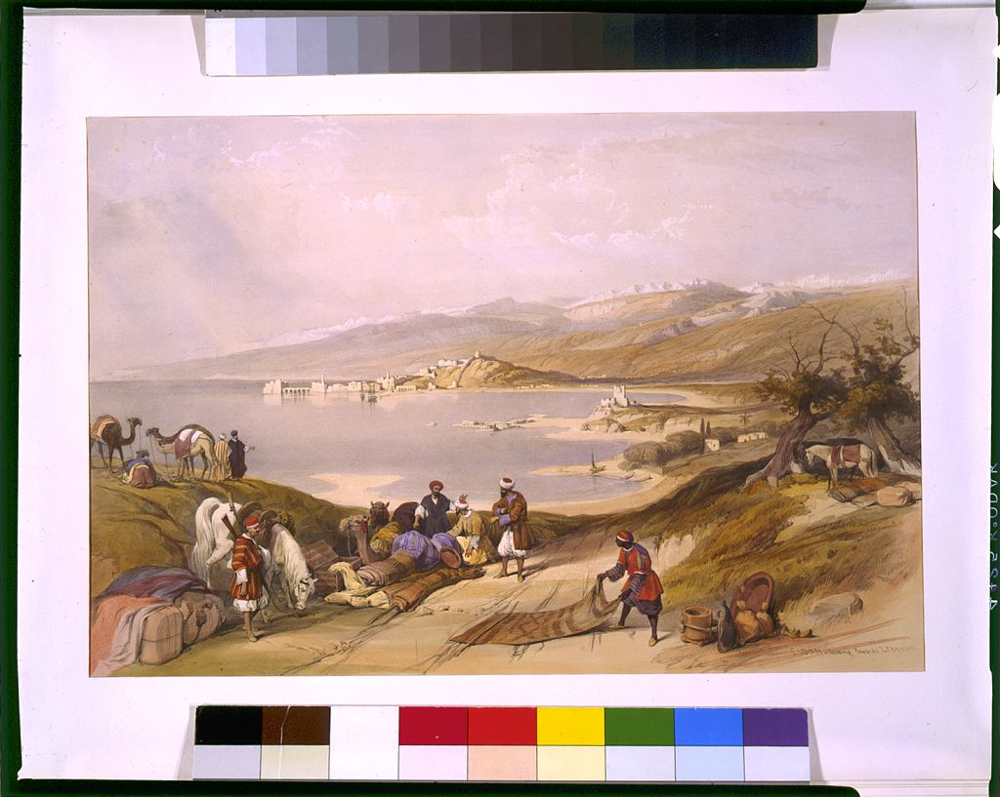

First time? أول مرة
New to Lebanese food? Start here.
Eight dishes almost everyone loves: what is in them and which diets they fit, so you know what you are eating. Tap one to see where to eat it.

At the table ع السفرة
How to eat like a Lebanese.
Words for the table كلمات
Say these and you will be fine.
The labels on every dish:
VeganVegetarianGluten-freeDairy-free Lamb, chicken or fishServed rawContains nuts, sesame or dairyVegan dishes are also called "siyami": the dishes eaten during Lent. Tahini (sesame) is in many dips and sauces: if you are allergic, say "bala tahini".